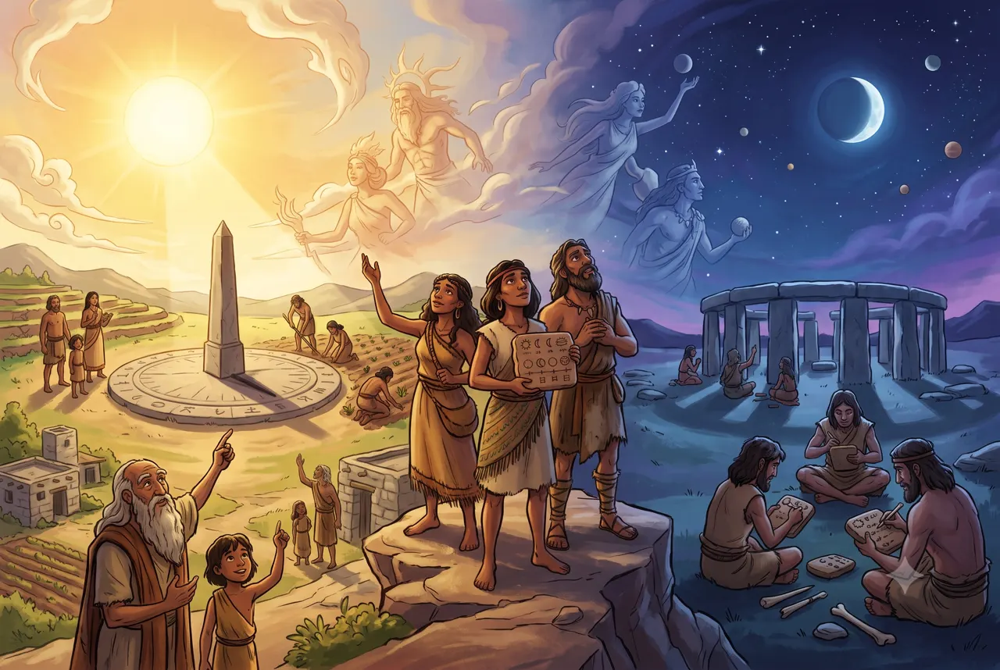
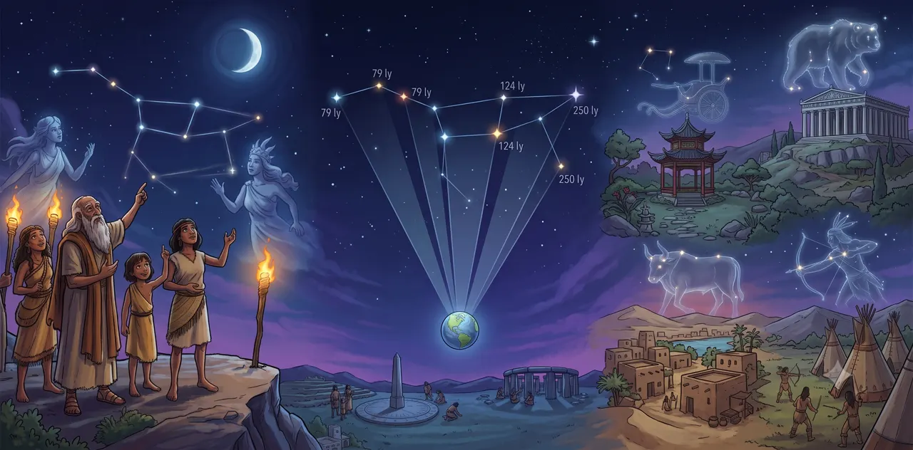
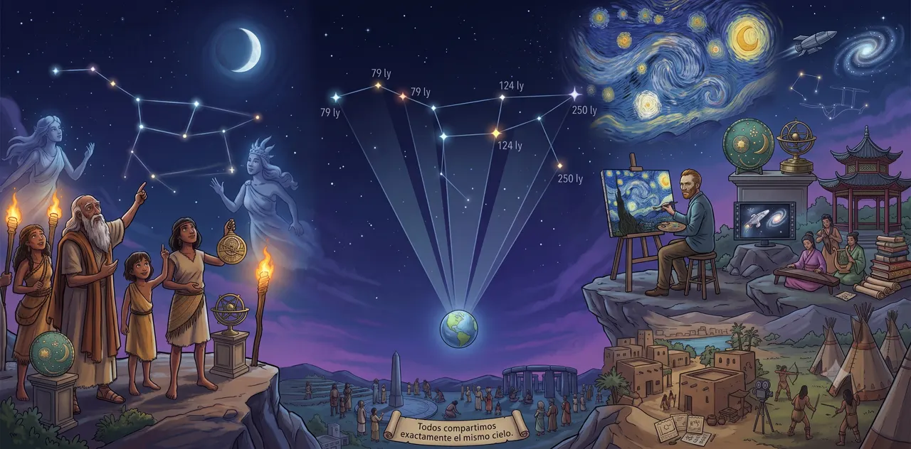
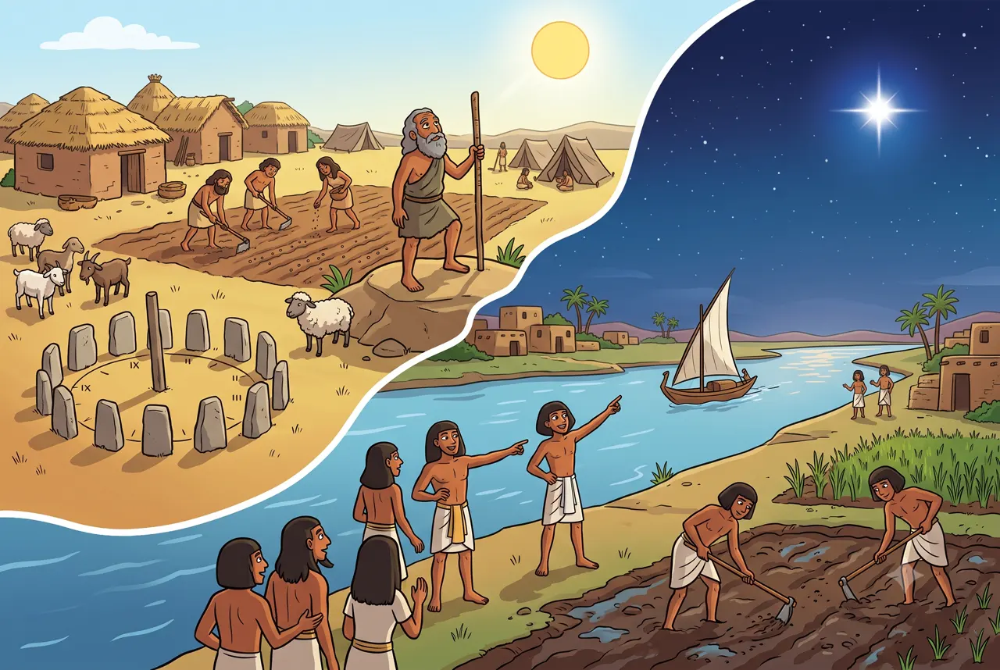

Los orígenes de la observación del cielo
Grandes ideas de la astronomía
¡Te damos la bienvenida a este viaje espacial! Descubre cómo la humanidad comenzó a observar el cielo y por qué el movimiento de los astros transformó nuestra forma de vivir para siempre.
- Unos 8 minutos de lectura
- Al final te espera una trivia para coleccionar estrellas

El cielo: el primer misterio de la humanidad

La astronomía (la ciencia que estudia los planetas, las estrellas y las galaxias) es una de las ciencias más antiguas del mundo. Se dedica a estudiar los objetos del espacio, cómo se mueven y qué sucede más allá de la Tierra.
Mucho antes de inventar los telescopios, nuestros antepasados ya observaban el cielo a simple vista. Comprender los ciclos del Sol, de la Luna y de los planetas fue el primer gran esfuerzo humano por encontrar un orden en la naturaleza.
Al principio, muchas culturas antiguas creían que los astros eran dioses o seres mágicos. Sin embargo, pronto descubrieron que mirar el cielo tenía una gran utilidad práctica: funcionaba como un enorme y exacto reloj que les servía para medir el tiempo y organizar la vida de sus comunidades.
¿Sabías que...?
Las primeras personas no escribían sus descubrimientos en libros. Los científicos han encontrado registros astronómicos tallados en huesos de animales o pintados en las paredes de cuevas prehistóricas, con miles de años de antigüedad.
Las constelaciones: dibujos con estrellas

Al mirar el cielo en una noche despejada, nuestro cerebro tiende a buscar formas uniendo los puntos luminosos. A estos dibujos imaginarios de estrellas los llamamos constelaciones.
Es importante saber que las estrellas de una constelación no están realmente cerca unas de otras en el espacio; algunas están muchísimo más lejos que otras. Solo parecen formar un dibujo porque las vemos juntas desde nuestra posición en la Tierra.
A lo largo de la historia, distintas culturas imaginaron figuras diferentes en el mismo cielo:
Antiguos griegos
Unían las estrellas para dibujar a los héroes y monstruos de sus mitos, como el gran cazador Orión o el enorme Escorpión.
Culturas nativas
Pueblos como los mayas veían en el cielo a animales muy importantes para su entorno, como jaguares, serpientes y aves sagradas.
Pueblos del sur
En Sudamérica y Australia, muchos pueblos no unían estrellas brillantes, sino que miraban las manchas oscuras del cielo para formar animales como la llama cósmica.
En el año 1922, los astrónomos de todo el mundo se pusieron de acuerdo y dividieron el cielo en 88 regiones oficiales. Así, las constelaciones dejaron de ser solo cuentos antiguos y pasaron a ser un mapa exacto para que los científicos ubiquen galaxias y planetas de forma rápida.
Para conocer más historias y ver Orión en tres dimensiones, abre la guía Constelaciones.
El cielo en el arte y la cultura

El cielo nocturno, inmenso y silencioso, siempre ha despertado asombro y curiosidad. Esta emoción inspiró a personas de todas las épocas, convirtiendo al espacio en un tema central para el arte humano.
- En la pintura: desde objetos de bronce antiguos (como el disco de Nebra de la portada) hasta el famoso cuadro «La noche estrellada» del pintor Vincent van Gogh, el arte ha intentado atrapar la belleza de las estrellas.
- En las historias: una gran cantidad de libros, canciones y películas tratan sobre viajes espaciales y galaxias lejanas.
El arte nos ayuda a conectar con el universo de una forma emocionante. Además, nos recuerda algo muy importante: no importa de qué país seamos, todos compartimos exactamente el mismo cielo.
Los calendarios y la agricultura

Cuando los seres humanos dejaron de ser nómadas y empezaron a plantar sus propios alimentos, observar el cielo se volvió vital. Para tener buenas cosechas, necesitaban predecir cuándo llegarían las lluvias o el frío. Por eso, guiándose por el movimiento del Sol, crearon los primeros calendarios.
El aviso del río Nilo
En el antiguo Egipto, los agricultores vigilaban muy de cerca a Sirio, la estrella más brillante de la noche. Sabían que justo cuando Sirio aparecía en el cielo un poco antes del amanecer, el gran río Nilo estaba a punto de inundarse. Esa inundación era necesaria porque dejaba la tierra mojada y perfecta para sembrar la comida de todo el año.
Para saber más
Si quieres seguir aprendiendo sobre el espacio de forma divertida, te recomendamos estos sitios educativos:
- NASA Space Place (en español) (se abre en una pestaña nueva)Sitio de la NASA con artículos fáciles de entender y juegos.
- ESA Kids (se abre en una pestaña nueva)Página de la Agencia Espacial Europea con noticias y curiosidades sobre el universo.
- Portal Uruguay Educa (se abre en una pestaña nueva)Materiales educativos sobre el cielo que vemos todos los días.
Video recomendado
Te invitamos a ver este video del canal «Juankstar». Te explica cómo la humanidad fue inventando los nombres de estos grupos de estrellas.
Explora el cielo desde tu computadora
Stellarium Web: un planetario gratuito en línea. Busca tu ciudad y mira qué estrellas la iluminan esta misma noche. (se abre en una pestaña nueva)Material de referencia
Este contenido está basado en la propuesta del documento «Big ideas in Astronomy» de la Unión Astronómica Internacional (se abre en una pestaña nueva).
Desafío: gana tus estrellas
Es momento de poner a prueba lo que aprendiste en esta guía. Son 7 preguntas: cada respuesta correcta suma una estrella.